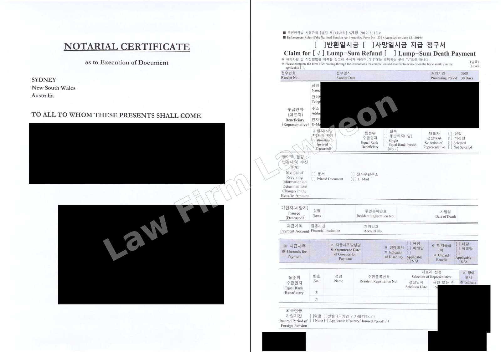
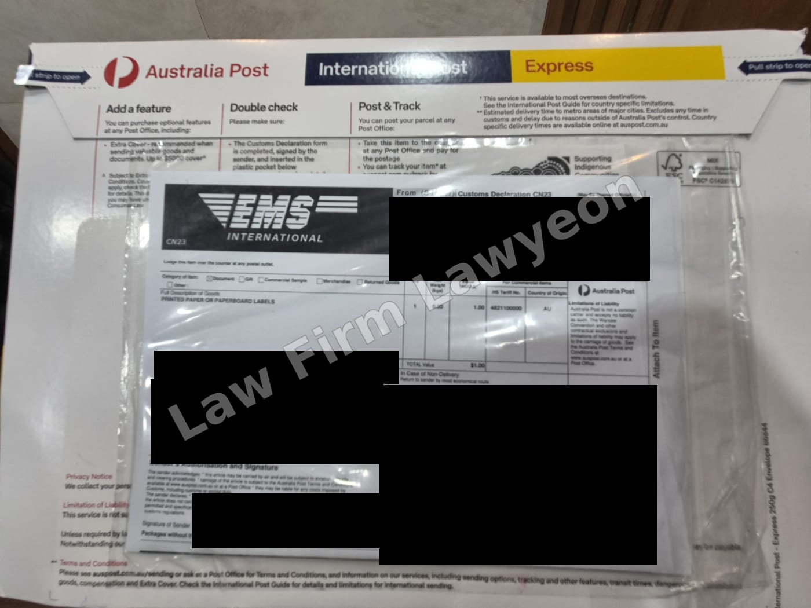
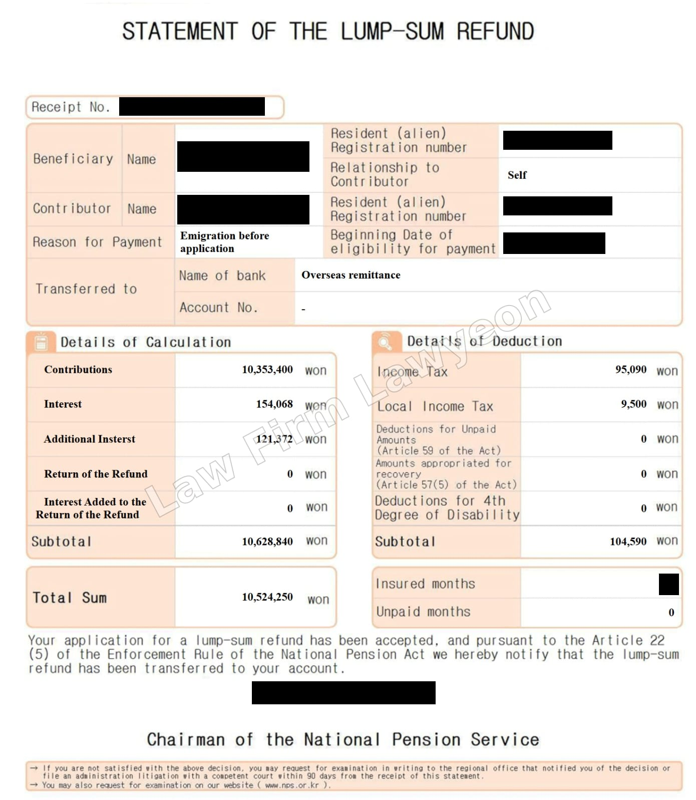

Lawyeon represented a foreign national living abroad in a claim for a Korean National Pension lump-sum refund approximately four years and nine months after leaving Korea. The refund was paid by overseas remittance without any request for supplementary documents.
A foreign national's right to claim a lump-sum refund on returning to their home country expires if the claim is not made within five years of the date the right arises. Based on the client's departure date, approximately three months remained before the limitation period expired. Preparation had to allow for notarisation and an apostille in Australia, as well as delivery of the original documents to Korea.
To avoid delays caused by requests for supplementary documents after filing, Lawyeon consulted the responsible department of the National Pension Service in advance about the content and format of the application documents and evidence of the overseas bank account. This preparation aimed to prevent the need to prepare or authenticate documents again abroad and resend them to Korea.
We also located a lawyer providing notarial services near the client's residence, coordinated the appointment, and provided instructions in English on document preparation and authentication. After receiving the notarised and apostilled originals in Korea, we submitted the lump-sum refund claim and overseas remittance application before the limitation period expired.


The claim was processed in a single submission without any request for supplementary documents. The National Pension Service confirmed that KRW 10,524,250 had been paid by overseas remittance, comprising the contributions and interest, less tax. The client completed the refund process without travelling to Korea.
